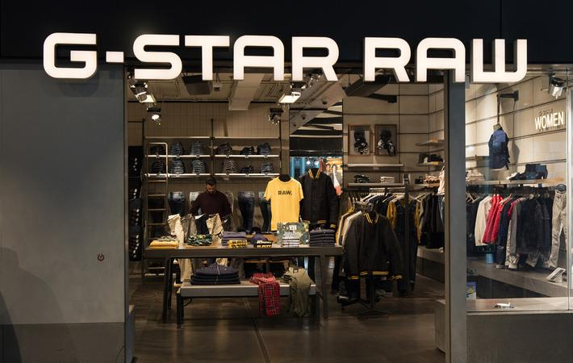

G-STAR RAW
G-Star RAW (commonly called G-Star) is a Dutch designer clothing company, founded by Jos van Tilburg in Amsterdam in 1989, which produces high quality clothing. ... G-Star is influenced by military clothing. Inspirations of their designs come from vintage military apparel from around the world.
Shop can be found at : KB-346 on the MAP.